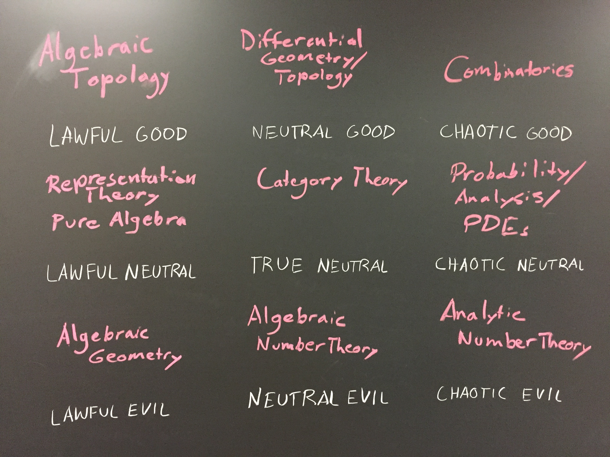
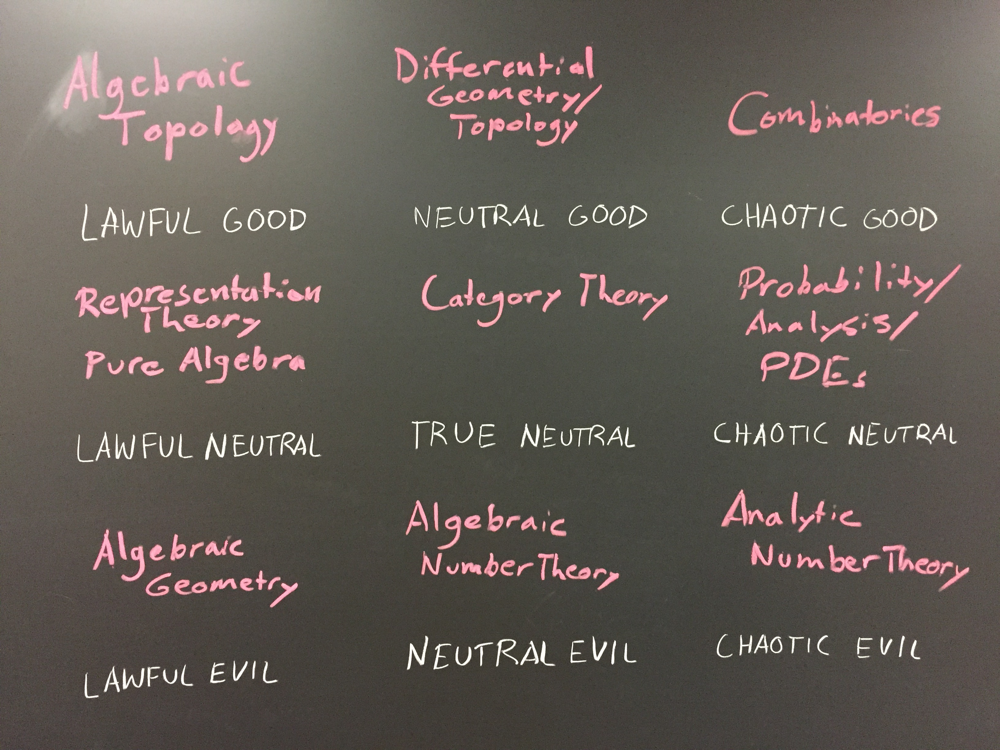

Here are some mathematical ramblings I just decided to throw up here. Some of these documents will be problems I have done to further my understanding, and others will be notes I've taken to manifest Feynman's adage that one does not understand something until they can explain it to someone else (although in math this is less true than in physics, in my opinion). I have posted them here so I have an actual repository, and if by some miracle someone finds both them and them useful.
When reading papers or starting a subject in math, I find myself forgetting exact definitions and intuitions. I have thus compiled an appendix. So far (I see this list growing) I have basic abstract algebraic objects, topology and manifolds, differential forms done with field theory in mind, and Lagrangian/Hamiltonian mechanics with quantization.
Over the course of my college career, I have run into some pretty amazing ideas. Here I have recorded some problems that I've been given that are amazing in their daunting-ness and simplicity, profoundness, and/or beauty of solution or conclusion. At least one of these problems has stronger results, but I'll only ever include problems here on which I get full points, plus stronger results following from initially mind-blowing conclusions don't increase the beauty of said problem in a significant way. problems, solutions. These problems span number theory to equations on manifolds to string theory. Those who wrote the problems are credited in the file.
Some algebraic topology problems.
I took a course in differential geometry, and have some problems solved here. All problems were written by the amazing Prof. Jonathan Luk.
In the Winter of 2019, I took Prof. Tsachy Weissman's EE376A: Information Theory. This was my final report; I went a bit overboard, but it's a cool subject, so whaddya gonna do?
Like, according to Lau's conjecture, almost all math people, I've been getting pulled more and more into theoretical computer science. Here is a list of my favorite algorithms.
Here's a heavy item. The above alludes to quantum groups, notes of which are given here. These are notes taken during Prof. Daniel Bump's course on quantum groups. What is NOT in here is a precise definition of a quantum group, because one does not exist. What is in here are standard introductions to quantum algebra (enveloping algebras, quantum trace, bialgebras, hopf algebras), monoidal, framed, and braided categories, quasitriangularity of Hopf algebras, connections to low-dimensional topology, some examples of what are classified as "quantum groups," as well as some interesting properties of these, and vertex models.
There's lots of connections to quantum groups and operator algebras of conformal field theories. Unfortunately, Lie Theory is a super dense subject. Here is my attempt to understand it. This is a prerequisite to one of the algorithms in my "favorite algorithms" file. Because of the scope of Lie algebra, these notes will be in progress for quite some time.
Analytic number theory scares me. So I decided to put some guts into it and do some problems written by Prof. Kannan Soundarajan and Prof. Andrew Granville in their book on multiplicative number theory.
By 'mathematical quantum field theory,' I mean mathematically rigorous quantum field theory calculations. (Path integral, I'm looking at you) These are problems given by Prof. Sourav Chatterjee's seminar on mathematical physics, who, the first day of class, called it 'Quantum field theory for mathematicians.' Because I was an undergrad, I had to do some note-taking and these problems. Here are the notes and here are the problems.